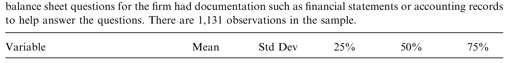
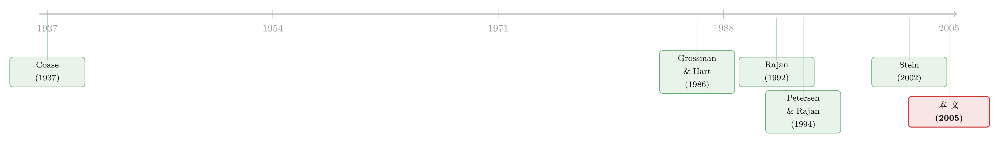

大银行为什么不爱给小店放贷？——一个关于「软信息」的组织故事
本文读的是 Berger, Miller, Petersen, Rajan & Stein (2005, Journal of Financial Economics)：把「不完全契约」理论搬进银行业，作者用一份小企业融资调查证明——大银行天生不擅长收集和使用「软信息」，于是它们躲开没有财务记录的「难啃」客户，隔着更远的距离、更冷淡地放贷，关系更短、更不专一；当一家小公司被迫只能找大银行借钱时，它会更明显地受到信贷约束。
1 一个老问题，换了个问法
经济学里最经久不衰的问题之一，是 Coase（1937）抛出来的：企业的边界到底由什么决定？ 这个问题通常被放在「纵向一体化」的框架里讨论——上游和下游什么时候该并进同一家公司的屋檐下。但你也可以反过来问：横向的合并，什么时候才创造价值？
今天，这个问题最鲜活的样本，恰恰是商业银行业。过去几十年银行业一直在并购整合，大银行不断吞并、取代小银行。于是一个自然的疑问浮出水面：那些活下来的大银行，会不会和被它们挤掉的小银行，做着完全不一样的生意？
这正是本文的切口。作者并不去问「技术怎样决定资产归谁所有」（那是 Baker & Hubbard（2003）研究卡车司机、Simester & Wernerfelt（2003）研究木匠工具的路子），而是反过来追问——一个组织的「形态」，会不会反过来决定它能高效地做哪些事、做不了哪些事？
换句话说：function follows form。功能，跟着组织形态走。
2 故事的内核：软信息与「小李子」的研究激励
要讲清楚这篇论文，得先讲清楚它背后的那个模型，也就是 Stein（2002）。这是全文的「核心」，后面六块实证证据，全是围着它转。
作者用一个例子把模型的直觉说透了。想象 Little Rock 有一位信贷员，专门决定哪些小企业贷款值得做。他判断的好坏，取决于他在软信息（soft information）上下了多少功夫——而他愿不愿意下功夫，取决于他的激励。
所谓「软信息」，是那些没法被白纸黑字写进报告、再原样传给上级的信息：这个老板诚不诚实、勤不勤快、靠不靠谱——典型的「人格贷款（character loan）」。与之相对的是硬信息（hard information）：审计过的财务报表、资产负债表、信用评分，可以传真、可以邮件，谁看都一样。
先看小银行。 在极端情形里，这位信贷员自己就是银行行长，资金怎么用他说了算。既然他笃定自己手里总有钱可放，他就知道自己辛苦做的调研不会白费——于是他有强烈的动力去研究。小银行内在的去中心化，奖励了那个肯钻研的人，因为它保证了「你研究出来的好项目，有钱让你去放」。
接着，反转出现。 如果这位 Little Rock 信贷员只是一家大型多分支银行里的一颗螺丝钉，麻烦就来了。假设他花了大量精力摸清了本地的好项目，可上头某个人却判断「Tulsa 的机会更好」，于是砍掉了 Little Rock 的资本额度。他没机会用上自己辛苦攒下的软信息，又没法把这些信息可信地传上去——他的研究白做了。理性预期之下，他事先就懒得去做研究了。
这就是 GHM（Grossman-Hart-Moore）那条核心洞见的一个具体版本：把控制权从一个人手里拿走，会削弱他的激励。
但真正关键的一步在于：模型对软、硬信息的预测是相反的。 当信息可以「硬化」、可以往上传时（比如信用评分模型的输出），大银行反而可能激发出更多的努力——因为下级可以拿着可验证的证据，去为自己的部门争取更大的资本额度，把「权力与专长分离」变成了一场内部竞标。
所以模型给出的不是「大银行处处不如小银行」，而是一个比较优势的论断：
小银行在「靠软信息放贷」上有比较优势；大银行在「靠硬信息放贷」上有比较优势。
这恰好对应了银行业里那个老话题——关系型贷款（relationship lending） 对 交易型贷款（transactions-based lending）（Berger & Udell, 2002）。作者甚至顺手澄清了一个常见误解：很多人（如 Keeton, 1995）以为「多银行控股公司」这种叠床架屋的结构对小企业贷款最不利；可 Stein（2002）说恰恰相反——正因为它让资本难以在子公司间挪动，它反而成了 CEO 对「我不会乱抽你额度」的一种可信承诺，从而改善了软信息的采集激励。
3 六块证据，和一个绕不开的内生性
有了这个内核，作者要做的就是去数据里找它的指纹。他们一共摆出了六块证据。
首先，最简单的一块：大银行更倾向于贷给更大的、或有更好会计记录的企业（会计记录是硬信息的好代理）。
接着，控制住企业与市场特征后，企业和它打交道的那家分行之间的物理距离，随银行规模上升。这与「大银行不依赖那种靠面对面接触才能拿到的软信息」相吻合。
第三，与前一点相关：和大银行打交道的方式更冷淡（impersonal）——见面更少，更多靠邮件、电话沟通。
讲到这里，一个自然的问题是：企业是自己挑银行的啊。 一家公司选哪家银行借钱，本身就和它的特征有关——这正是第一块证据（大银行配上有会计记录的企业）所暴露的内生性。那么，如果我们想拿「银行规模」当解释变量去解释关系的形态，就得格外小心。也许大银行对客户冷淡，不是因为它不会热情，而是因为它本就匹配了一批「不需要热情」的客户（比如一个有 MBA 学位、自己就能做出漂亮 spreadsheet 的创业者）。
于是真正关键的一步在于工具变量。 作者用两个工具来给「银行规模」找外生变异：
- (i) 企业所在的 MSA 或乡村县里，所有银行规模中位数的对数（按分支数加权）；
- (ii) 过去十年中，企业所在州既非「单一银行制」也非「有限分支制」的年份占比——一个衡量该州对分支扩张有多宽松的监管变量。
直觉很干净：如果一家公司向大银行借钱，仅仅是因为它所在的市场上只有大银行（比如监管没有人为压制银行规模），那这就不是企业的内生选择，而是地理强加的外生限制。两个工具的单变量相关系数是 0.472——监管宽松的州，各个市场里的银行普遍更大。作者也试过更保守的版本：只用州层面的监管工具，虽然损失了州内跨市场的变异、标准误更大，但点估计「惊人地相似」。
然后，第四、第五块证据：当企业向小银行借钱时，银企关系更长久、也更专一（小银行更可能是企业的唯一贷款人）。这与理论完全契合——小银行积累的软信息难以被企业带走，于是把企业绑在了这家银行身上（这正是 Rajan（1992）刻画的那种「累积的软信息把借款人套牢」的世界）。
最后，也是最硬的一块：银行规模会不会影响小企业拿到信贷的能力？作者沿用 Petersen & Rajan（1994）的思路，用一个聪明的代理——企业拖欠商业信用（trade credit）的比例。延迟偿还供应商的货款是一种极其昂贵的融资方式，一家公司只有在被正规金融机构「卡住」时才会这么干。结果是：其他条件相同，向更大银行借钱的企业，更可能拖欠商业信用。
而这里藏着全文最漂亮的一处反转：这个结果只有在用了工具变量之后才成立。
普通最小二乘（OLS）几乎看不到这个效应，因为内生性把它抵消掉了：那些天生最难放贷的企业，本来就倾向于去找小银行（正如理论预测）。所以不做 IV，这个检验是偏向于「找不到」小银行能缓解信贷约束的。只有当企业是被「周围没有小银行」这一外生事实逼到大银行那里时，我们才看清——它们确实更受信贷约束。
4 数据：一份关于「真·小企业」的调查
作者的主数据是美联储 1993 年的全国小企业融资调查（National Survey of Small Business Finance, NSSBF）。调查实际在 1994–1995 年完成，针对 1993 年底尚存续的企业做分层随机抽样；部分信息（如企业最近一笔贷款）来自 1994 自然年。入样条件是雇员少于 500 人的营利性实体。
这批企业是真的小：资产账面价值均值 $3.0 million、中位数仅 $680,000。这恰恰是本文的理想样本——很多企业根本没有正式财务记录，这才使「软信息是否重要」成了一个可检验的真问题。下表给出了主要变量的描述性统计。

Table 1: presents summary statistics for many of the variables for both the full
5 文献脉络：从企业边界，到一家小银行的柜台
把视野拉远，这篇论文坐落在一条很长的脉络上。
源头是 Coase（1937）的「企业的本质」。其后，Williamson（1975, 1985）与 Klein et al.（1978）的交易成本经济学给出了一个答案：一体化能缓解市场交易中的「敲竹杠」问题。但这套理论是「单面」的——它说清了一体化的好处，却说不清坏处，逻辑上甚至会推出「把全经济塞进一家公司最有效率」的尴尬结论。
真正把「一体化的代价」讲清楚的，是 Grossman & Hart（1986）、Hart & Moore（1990）和 Hart（1995）这条不完全契约/产权（GHM） 路线：在合约不完全的世界里，谁对实物资产有控制权，谁的事前激励就更强。可惜 GHM 太抽象，难以做出锋利的实证检验（Whinston, 2001 对此有专门评述）。

于是出现了「第二代」模型——不死磕原版 GHM，而是为某个具体行业、具体情境量身定制可检验的比较静态。Baker & Hubbard（2003，卡车业）、Simester & Wernerfelt（2003，木工业）、Mullainathan & Scharfstein（2001，化工业）都是这条路。本文的直接起点，则是 Stein（2002）——它把 GHM 的洞见放进「软/硬信息」的设定里，专门预言了大小银行的差异。
与此同时，银行业自己也长出了一条平行的关系型贷款文献：Rajan（1992）的「内部人与外部人」、Petersen & Rajan（1994, 1995）关于关系价值与竞争的研究、以及 Petersen & Rajan（2002）那篇著名的《距离还重要吗？》。本文站的位置，正是把这两条线焊在一起：用 Stein（2002）的组织理论，去解释 Petersen-Rajan 式的关系型贷款经验事实。
值得一提的是，作者诚实地指出了一个替代理论：Brickley et al.（2003）发现小银行的高管平均持有近 70% 的本行股票，于是从显性激励合约的角度，也能推出「小银行更擅长软信息」。作者的态度很坦白——两套理论是互补的，他们手里没有内部持股数据，无法把二者干净地分开。
（关于「关系」如何被算进一国信贷的总账，可参见《银行为什么舍得先亏本拉客？》；关于距离在另一个市场里的命运，可参见《「距离已死」？可在市政债的承销桌上，离得近反而更便宜》。)
6 评论与延伸（Q&A + 研究方向）
(a) 几个可能的疑问
Q：这篇论文有没有一个带方程的正式模型？
没有。本文是实证论文，理论部分（第 2 节「假设发展」）用一个 Little Rock 信贷员的例子，把 Stein（2002）模型的逻辑讲清楚，并据此推出可检验的假设，但不重述 Stein 的形式化推导。所以本文不存在需要逐式展开的模型方程——这一点必须如实交代，不能为了凑「模型一节」而编造方程。
Q：用「拖欠商业信用」来度量信贷约束，可信吗？
这是 Petersen & Rajan（1994）确立的经典代理：商业信用的隐含利率极高，理性企业只有在被正规机构配给（rationed）时才会去拖欠它。Fisman & Love（2003）也用类似思路。它当然不完美，但作为「信贷是否真的更紧」的代理，比单看贷款利率更直击「可得性」这一维度。
Q：为什么作者反复强调「IV 之后效应更大」？这不像是常见的「IV 削弱显著性」？
因为这里的内生性偏误是反向的：最难放贷的企业本就自我选择去了小银行，这会把「小银行改善信贷可得性」的真效应在 OLS 里遮住甚至抹平。IV 把这层自选择剥离后，被掩盖的真效应才显形——所以是「更大」而非「更小」。这恰是本文识别叙事里最优雅的一笔。
Q：两个工具变量，哪个更「干净」？
州层面的监管变量更纯，因为它只用跨州变异，不易被「某个繁荣大城市同时吸引大银行和高素质创业者」这类市场层面的混杂污染。代价是它更弱、标准误更大。作者两种都跑，点估计高度一致，这本身就是一种稳健性。
Q：这套结论在今天（信用评分、金融科技普及之后）还成立吗？
本文数据是 1993 年，那时硬信息技术远不如今天发达。随着信用评分、大数据风控把更多「软」信息「硬化」，大小银行的比较优势边界很可能已经移动。这正是后续文献（以及金融科技研究）的富矿——参见《监督做得更差，却照样抢走你的客户——金融科技凭什么挤进信贷市场》。
Q：结论是「大银行更差」吗？
不是。核心是比较优势：大银行在硬信息、交易型贷款上可能做得更好甚至更有效率。论文反对的是「大银行处处不如小银行」的笼统说法，主张功能随形态分工。
(b) 几个可能的研究问题与提案
1. 把「软信息」搬进公司债/信用市场
【经济故事】本文讲的是银行贷款。但在公司债一级市场，承销商与发行人之间同样存在软信息——尤其对首次发债、无评级的中小发行人。承销商的组织规模（大投行 vs 精品行）会不会复刻「function follows form」的模式？ 【可行性】中。需要 Mergent FISD + 承销商层面数据，识别可借鉴本文的「市场结构工具变量」思路；难点在于债券市场的匹配比贷款更受评级门槛筛选，外生变异更难找。
2. 外资银行进入与软信息的「水土不服」
【经济故事】跨境扩张的外资大行天然处在「信息链最长」的一端。它们是否系统性地避开了东道国的软信息客户，从而改变了当地中小企业的信贷结构？这是本文逻辑在国际维度的自然延伸。 【可行性】中高。可用各国信贷登记（credit registry）+ 外资银行进入的监管时点做 DiD；识别上要小心外资进入本身的内生选址。
3. 银行合并对借款人信贷可得性的「软信息折旧」
【经济故事】当一家小银行被大银行并购，它积累的软信息是否随之「贬值」，导致原客户被迫转向更冷淡、更受约束的关系？本文的横截面证据，可以升级为一个并购事件研究。 【可行性】高。并购时点清晰，可用 NSSBF 之后的调查或信贷登记做事件研究，已有 Sapienza（2002）等相邻工作铺路。
4. 金融科技把软信息「硬化」后，组织优势是否反转？
【经济故事】如果大数据风控能把「老板靠不靠谱」编码成可传输的硬信息，那么大型平台的比较优势是否反而压过了小银行？本文的边界条件正好提供了可证伪的预测。 【可行性】中。需要金融科技放贷的微观数据与传统银行的对照样本，识别难在两类机构的客户本就不可比。
5. 流动性视角：软信息关系是否提供「危机里的保险」
【经济故事】小银行的长期、专一关系，会不会在信用收缩期成为借款人的缓冲垫？把本文的「关系强度」与危机期的信贷连续性挂钩，是一个有政策含义的方向。 【可行性】中高。可结合公司债/信贷在危机窗口的可得性数据，与本文的关系度量交互；与流动性危机文献天然接壤。
我的判断
这篇论文的贡献在于示范：它没有去硬测原版 GHM（那几乎不可测），而是借 Stein（2002）这个「第二代」模型，在银行业这个信息至上的场景里，把一个抽象的组织理论翻译成六条彼此印证、又互相咬合的可检验假设。尤其是「OLS 与 IV 符号反转」那一处——内生性不是被当作麻烦回避掉，而是被用作证据本身——堪称识别叙事的范本。
要说对识别的担忧，主要有二。其一，工具变量的排他性并非无懈可击：州层面的分支监管，可能通过银行规模之外的渠道（如整体经济活力、本地竞争结构）影响银企关系；作者用「只保留州级工具」的保守版做了缓冲，但终究无法完全排除。其二，与 Brickley et al.（2003）的显性激励理论之间，本文坦承无法分离——缺少内部持股与薪酬数据，「控制权激励」与「股权激励」这两套机制始终缠在一起。
我想看到的后续，是把这套「形态决定功能」的框架放到信息技术与金融科技重塑信息边界的今天去重测：当越来越多的软信息被硬化，组织规模的比较优势会不会松动、甚至反转？这既是对本文外部效度的检验，也是把这条二十年前的脉络接到当下最热问题上的最自然方式。
参考文献
- Baker, G.P., Hubbard, T. (2003). Make versus buy in trucking: asset ownership, job design and information. American Economic Review 93, 551–572.
- Berger, A.N., Miller, N.H., Petersen, M.A., Rajan, R.G., Stein, J.C. (2005). Does function follow organizational form? Evidence from the lending practices of large and small banks. Journal of Financial Economics 76(2), 237–269.
- Berger, A.N., Udell, G.F. (2002). Small business credit availability and relationship lending: the importance of bank organizational structure. Economic Journal 112, F32–F53.
- Brickley, J.A., Linck, J.S., Smith, C.W. (2003). Boundaries of the firm: evidence from the banking industry. Journal of Financial Economics 70, 351–383.
- Coase, R.H. (1937). The nature of the firm. Economica 4, 386–405.
- Fisman, R.J., Love, I. (2003). Trade credit, financial intermediary development and industry growth. Journal of Finance 58, 353–374.
- Grossman, S.J., Hart, O.D. (1986). The costs and benefits of ownership: a theory of vertical and lateral integration. Journal of Political Economy 94, 691–719.
- Hart, O.D., Moore, J. (1990). Property rights and the nature of the firm. Journal of Political Economy 98, 1119–1158.
- Mullainathan, S., Scharfstein, D. (2001). Do firm boundaries matter? American Economic Review Papers and Proceedings 91, 195–199.
- Petersen, M.A., Rajan, R.G. (1994). The benefits of firm-creditor relationships: evidence from small-business data. Journal of Finance 49, 3–37.
- Petersen, M.A., Rajan, R.G. (2002). Does distance still matter? The information revolution in small business lending. Journal of Finance 57, 2533–2570.
- Rajan, R.G. (1992). Insiders and outsiders: the choice between informed and arm's-length debt. Journal of Finance 47, 1367–1399.
- Simester, D., Wernerfelt, B. (2003). Determinants of asset ownership: a study of the carpentry trade. Review of Economics and Statistics, forthcoming.
- Stein, J.C. (2002). Information production and capital allocation: decentralized vs. hierarchical firms. Journal of Finance 57, 1891–1921.
- Williamson, O.E. (1975). Markets and Hierarchies: Analysis and Antitrust Implications. Collier Macmillan, New York.
- Whinston, M.D. (2001). Assessing the property rights and transaction-cost theories of firm scope. American Economic Review Papers and Proceedings 91, 184–188.